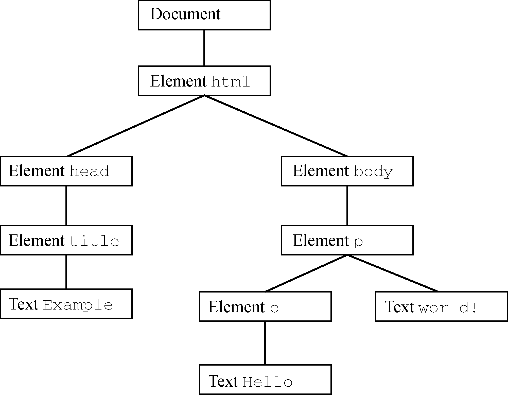
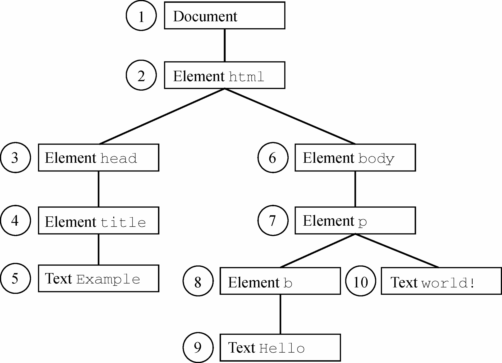

DOM2 Traversal and Range模块定义了两个类型用于辅助顺序遍历DOM结构。这两个类型——NodeIterator和TreeWalker——从某个起点开始执行对DOM结构的深度优先遍历。
如前所述，DOM遍历是对DOM结构的深度优先遍历，至少允许朝两个方向移动（取决于类型）。遍历以给定节点为根，不能在DOM中向上超越这个根节点。来看下面的HTML：
<!doctype html>
<html>
<head>
<title>example</title>
</head>
<body>
<p><b>hello</b> world!</p>
</body>
</html>这段代码构成的DOM树如图16-5所示。

图 16-5
其中的任何节点都可以成为遍历的根节点。比如，假设以<body>元素作为遍历的根节点，那么接下来是<p>元素、<b>元素和两个文本节点（都是<body>元素的后代）。但这个遍历不会到达<html>元素、<head>元素，或者其他不属于<body>元素子树的元素。而以document为根节点的遍历，则可以访问到文档中的所有节点。图16-6展示了以document为根节点的深度优先遍历。

图 16-6
从document开始，然后循序移动，第一个节点是document，最后一个节点是包含" world!"的文本节点。到达文档末尾最后那个文本节点后，遍历会在DOM树中反向回溯。此时，第一个访问的节点就是包含" world!"的文本节点，而最后一个是document节点本身。NodeIterator和TreeWalker都以这种方式进行遍历。
NodeIterator
NodeIterator类型是两个类型中比较简单的，可以通过document.createNodeIterator()方法创建其实例。这个方法接收以下4个参数。
root，作为遍历根节点的节点。whatToShow，数值代码，表示应该访问哪些节点。filter，NodeFilter对象或函数，表示是否接收或跳过特定节点。entityReferenceExpansion，布尔值，表示是否扩展实体引用。这个参数在HTML文档中没有效果，因为实体引用永远不扩展。
whatToShow参数是一个位掩码，通过应用一个或多个过滤器来指定访问哪些节点。这个参数对应的常量是在NodeFilter类型中定义的。
NodeFilter.SHOW_ALL，所有节点。NodeFilter.SHOW_ELEMENT，元素节点。NodeFilter.SHOW_ATTRIBUTE，属性节点。由于DOM的结构，因此实际上用不上。NodeFilter.SHOW_TEXT，文本节点。NodeFilter.SHOW_CDATA_SECTION，CData区块节点。不是在HTML页面中使用的。NodeFilter.SHOW_ENTITY_REFERENCE，实体引用节点。不是在HTML页面中使用的。NodeFilter.SHOW_ENTITY，实体节点。不是在HTML页面中使用的。NodeFilter.SHOW_PROCESSING_INSTRUCTION，处理指令节点。不是在HTML页面中使用的。NodeFilter.SHOW_COMMENT，注释节点。NodeFilter.SHOW_DOCUMENT，文档节点。NodeFilter.SHOW_DOCUMENT_TYPE，文档类型节点。NodeFilter.SHOW_DOCUMENT_FRAGMENT，文档片段节点。不是在HTML页面中使用的。NodeFilter.SHOW_NOTATION，记号节点。不是在HTML页面中使用的。这些值除了NodeFilter.SHOW_ALL之外，都可以组合使用。比如，可以像下面这样使用按位或操作组合多个选项：
let whattoshow = nodefilter.show_element | nodefilter.show_text;
createNodeIterator()方法的filter参数可以用来指定自定义NodeFilter对象，或者一个作为节点过滤器的函数。NodeFilter对象只有一个方法acceptNode()，如果给定节点应该访问就返回NodeFilter.FILTER_ACCEPT，否则返回NodeFilter.FILTER_SKIP。因为NodeFilter是一个抽象类型，所以不可能创建它的实例。只要创建一个包含acceptNode()的对象，然后把它传给createNodeIterator()就可以了。以下代码定义了只接收<p>元素的节点过滤器对象：
let filter = {
acceptnode(node) {
return node.tagname.tolowercase() == "p" ?
nodefilter.filter_accept :
nodefilter.filter_skip;
}
};
let iterator = document.createnodeiterator(root, nodefilter.show_element,
filter, false);
filter参数还可以是一个函数，与acceptNode()的形式一样，如下面的例子所示：
let filter = function(node) {
return node.tagname.tolowercase() == "p" ?
nodefilter.filter_accept :
nodefilter.filter_skip;
};
let iterator = document.createnodeiterator(root, nodefilter.show_element,
filter, false);通常，JavaScript会使用这种形式，因为更简单也更像普通JavaScript代码。如果不需要指定过滤器，则可以给这个参数传入null。
要创建一个简单的遍历所有节点的NodeIterator，可以使用以下代码：
let iterator = document.createnodeiterator(document, nodefilter.show_all,
null, false);
NodeIterator的两个主要方法是nextNode()和previousNode()。nextNode()方法在DOM子树中以深度优先方式进前一步，而previousNode()则是在遍历中后退一步。创建NodeIterator对象的时候，会有一个内部指针指向根节点，因此第一次调用nextNode()返回的是根节点。当遍历到达DOM树最后一个节点时，nextNode()返回null。previousNode()方法也是类似的。当遍历到达DOM树最后一个节点时，调用previousNode()返回遍历的根节点后，再次调用也会返回null。
以下面的HTML片段为例：
<div id="div1">
<p><b>hello</b> world!</p>
<ul>
<li>list item 1</li>
<li>list item 2</li>
<li>list item 3</li>
</ul>
</div>假设想要遍历<div>元素内部的所有元素，那么可以使用如下代码：
let div = document.getelementbyid("div1");
let iterator = document.createnodeiterator(div, nodefilter.show_element,
null, false);
let node = iterator.nextnode();
while (node !== null) {
console.log(node.tagname); // 输出标签名
node = iterator.nextnode();
}这个例子中第一次调用nextNode()返回<div>元素。因为nextNode()在遍历到达DOM子树末尾时返回null，所以这里通过while循环检测每次调用nextNode()的返回值是不是null。以上代码执行后会输出以下标签名：
div
p
b
ul
li
li
li如果只想遍历<li>元素，可以传入一个过滤器，比如：
let div = document.getelementbyid("div1");
let filter = function(node) {
return node.tagname.tolowercase() == "li" ?
nodefilter.filter_accept :
nodefilter.filter_skip;
};
let iterator = document.createnodeiterator(div, nodefilter.show_element,
filter, false);
let node = iterator.nextnode();
while (node !== null) {
console.log(node.tagname); // 输出标签名
node = iterator.nextnode();
}在这个例子中，遍历只会输出<li>元素的标签。
nextNode()和previousNode()方法共同维护NodeIterator对DOM结构的内部指针，因此修改DOM结构也会体现在遍历中。
TreeWalker
TreeWalker是NodeIterator的高级版。除了包含同样的nextNode()、previousNode()方法，TreeWalker还添加了如下在DOM结构中向不同方向遍历的方法。
parentNode()，遍历到当前节点的父节点。firstChild()，遍历到当前节点的第一个子节点。lastChild()，遍历到当前节点的最后一个子节点。nextSibling()，遍历到当前节点的下一个同胞节点。previousSibling()，遍历到当前节点的上一个同胞节点。
TreeWalker对象要调用document.createTreeWalker()方法来创建，这个方法接收与document.createNodeIterator()同样的参数：作为遍历起点的根节点、要查看的节点类型、节点过滤器和一个表示是否扩展实体引用的布尔值。因为两者很类似，所以TreeWalker通常可以取代NodeIterator，比如：
let div = document.getelementbyid("div1");
let filter = function(node) {
return node.tagname.tolowercase() == "li" ?
nodefilter.filter_accept :
nodefilter.filter_skip;
};
let walker = document.createtreewalker(div, nodefilter.show_element,
filter, false);
let node = iterator.nextnode();
while (node !== null) {
console.log(node.tagname); // 输出标签名
node = iterator.nextnode();
}不同的是，节点过滤器（filter）除了可以返回NodeFilter.FILTER_ACCEPT和NodeFilter.FILTER_SKIP，还可以返回NodeFilter.FILTER_REJECT。在使用NodeIterator时，NodeFilter.FILTER_SKIP和NodeFilter.FILTER_REJECT是一样的。但在使用TreeWalker时，NodeFilter.FILTER_SKIP表示跳过节点，访问子树中的下一个节点，而NodeFilter.FILTER_REJECT则表示跳过该节点以及该节点的整个子树。例如，如果把前面示例中的过滤器函数改为返回NodeFilter.FILTER_REJECT（而不是NodeFilter.FILTER_SKIP），则会导致遍历立即返回，不会访问任何节点。这是因为第一个返回的元素是<div>，其中标签名不是"li"，因此过滤函数返回NodeFilter.FILTER_REJECT，表示要跳过整个子树。因为<div>本身就是遍历的根节点，所以遍历会就此结束。
当然，TreeWalker真正的威力是可以在DOM结构中四处游走。如果不使用过滤器，单纯使用TreeWalker的漫游能力同样可以在DOM树中访问<li>元素，比如：
let div = document.getelementbyid("div1");
let walker = document.createtreewalker(div, nodefilter.show_element, null, false);
walker.firstchild(); // 前往<p>
walker.nextsibling(); // 前往<ul>
let node = walker.firstchild(); // 前往第一个<li>
while (node !== null) {
console.log(node.tagname);
node = walker.nextsibling();
}因为我们知道<li>元素在文档结构中的位置，所以可以直接定位过去。先使用firstChild()前往<p>元素，再通过nextSibling()前往<ul>元素，然后使用firstChild()到达第一个<li>元素。注意，此时的TreeWalker只返回元素（这是因为传给createTreeWalker()的第二个参数）。最后就可以使用nextSibling()访问每个<li>元素，直到再也没有元素，此时方法返回null。
TreeWalker类型也有一个名为currentNode的属性，表示遍历过程中上一次返回的节点（无论使用的是哪个遍历方法）。可以通过修改这个属性来影响接下来遍历的起点，如下面的例子所示：
let node = walker.nextnode();
console.log(node === walker.currentnode); // true
walker.currentnode = document.body; // 修改起点相比于NodeIterator，TreeWalker类型为遍历DOM提供了更大的灵活性。